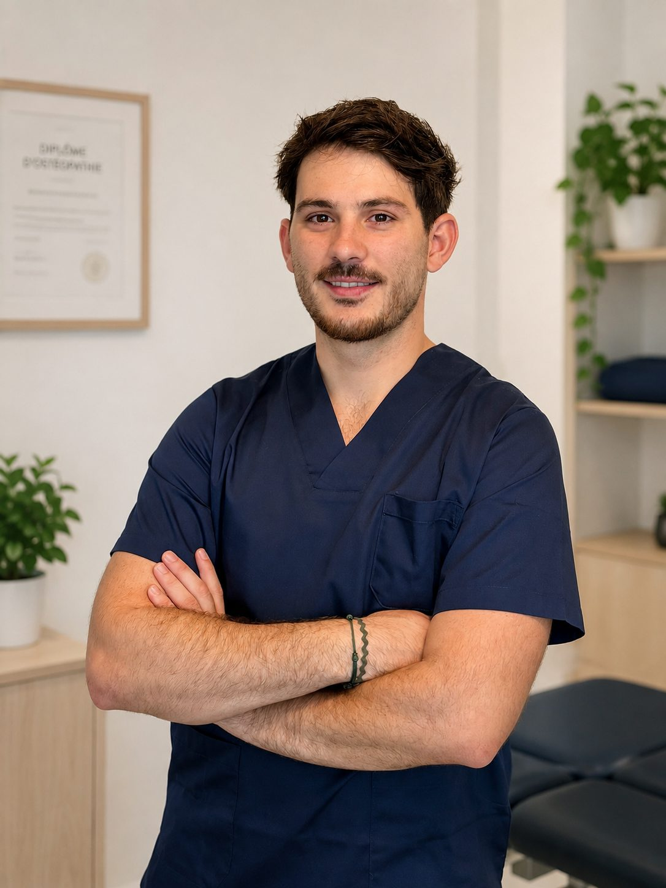
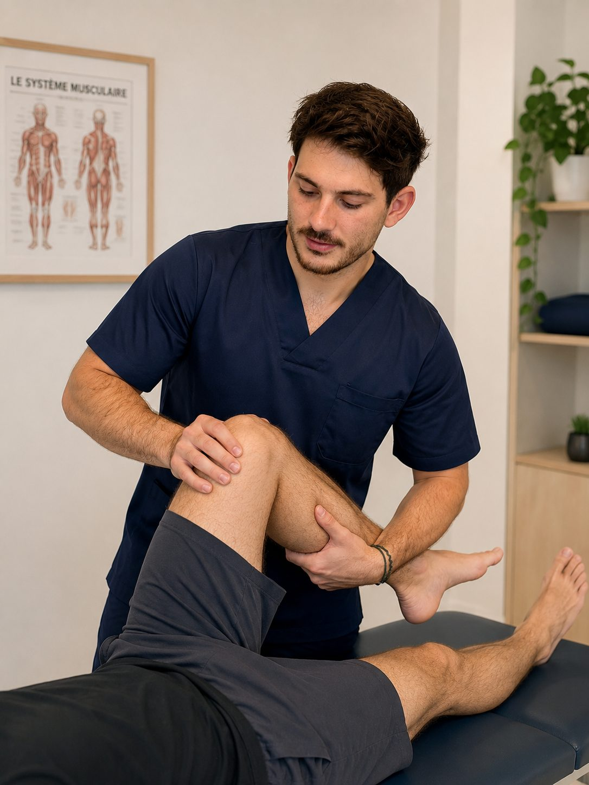
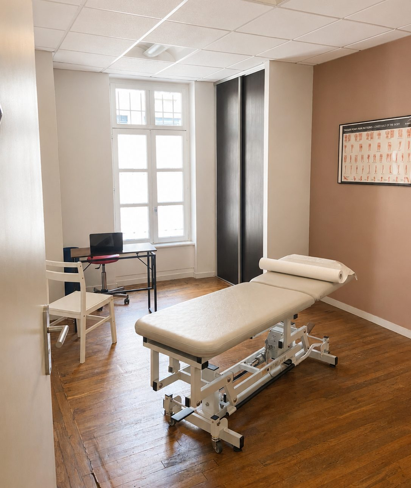

Comprendre la douleur avant de la traiter.
Bryan Martinez, ostéopathe D.O. Deux cabinets, entre Toulouse et l'Ariège, pour une prise en charge complète : je cherche d'où vient la douleur, pas seulement où elle se manifeste. En cas de douleur aiguë, un rendez-vous se libère le plus souvent sous 24 à 48 heures.

Deux lieux, une même prise en charge
Je partage ma semaine entre la Haute-Garonne et l'Ariège. Les deux cabinets sont installés au sein de structures de kinésithérapie, en rez-de-chaussée et accessibles PMR.
Toulouse — Récollets
62 bis boulevard des Récollets, à deux pas du métro Saint-Michel. Du jeudi au samedi. Consultation 60 €.
Découvrir le cabinet AriègeLa Tour-du-Crieu
2 ter chemin de la Galage, à cinq minutes de Pamiers. Lundi, mardi et mercredi. Consultation 55 €.
Découvrir le cabinetCe qui amène le plus souvent à consulter
Chaque motif a sa page : ce qu'il est, ce qui le déclenche, ce que l'ostéopathie peut y faire — et les signes qui doivent vous orienter vers un spécialiste.
Une douleur au genou peut venir de la hanche, une lombalgie d'une cheville mal récupérée. C'est pourquoi je teste bien au-delà de la zone qui fait mal.

Lombalgie
Mal de dos aigu ou installé, blocage, lumbago.
En savoir plus Membre inférieurSciatique & cruralgie
Douleur qui descend dans la fesse, la cuisse ou la jambe.
En savoir plus Cou et têteCervicalgies & maux de tête
Nuque raide, torticolis, céphalées de tension.
En savoir plus SportSportifs & blessures
Préparation, récupération, gêne qui revient à l'effort.
En savoir plus Viscéral & ORLTroubles digestifs & ORL
Ballonnements, reflux, sinus et oreilles qui se bouchent.
En savoir plus Autre motifVotre situation n'est pas listée ?
Le champ de l'ostéopathie est large. Contactez-moi.
Tous les motifs
Une vision complète, un traitement sur mesure
Ostéopathe D.O., diplômé du Conservatoire Supérieur d'Ostéopathie de Toulouse, j'exerce entre la Haute-Garonne et l'Ariège avec une conviction essentielle : une douleur n'est jamais dissociée de la personne qui la ressent.
Chaque consultation débute par un temps d'écoute et de compréhension. Mon objectif est d'identifier l'origine de votre motif de consultation en prenant en compte l'ensemble de votre histoire : l'apparition de la douleur, ses variations, les facteurs qui l'aggravent ou la soulagent, mais également votre activité professionnelle, votre pratique sportive, votre sommeil, votre hygiène de vie et vos antécédents.
Cette première étape est complétée par un examen clinique approfondi, associant tests médicaux et ostéopathiques. Elle permet de déterminer ce qui relève de mon accompagnement, tout en identifiant les situations nécessitant une orientation vers un autre professionnel de santé.
Mon approche repose sur un traitement adapté à chaque patient, car chaque corps, chaque parcours et chaque besoin sont uniques.
Mes deux cabinets sont situés au sein de structures de kinésithérapie. Ce choix favorise une prise en charge coordonnée : lorsque la situation nécessite un travail complémentaire de rééducation, les échanges avec les kinésithérapeutes permettent d'assurer une continuité et une cohérence dans votre accompagnement.
Comment se déroule une séanceOstéopathe du club de rugby SCA Pamiers
Depuis 2024, j'accompagne les joueurs du SCA, club de rugby de Pamiers, dans leur préparation et leur suivi tout au long de la saison. Présent lors des entraînements, des matchs et au bord du terrain, j'interviens dans l'évaluation des blessures, la prise en charge immédiate et l'accompagnement dans la reprise.
Le rugby demande une approche spécifique : savoir analyser rapidement une situation, déterminer en quelques instants si un joueur peut poursuivre ou s'il doit être arrêté, gérer les contraintes de l'urgence, puis assurer un suivi adapté pour favoriser un retour optimal et durable.
Une prise en charge qui s'adapte à vous
Chaque patient est unique, et mon approche s'adapte à chaque situation. Un nourrisson, un rugbyman ou un senior ne seront pas accompagnés de la même manière : les techniques, la pression exercée et le rythme des séances évoluent en fonction de vos besoins, de votre histoire et de vos objectifs.
Adultes
Douleurs de dos, tensions liées au travail ou au stress, suites de faux mouvement.
Sportifs
Préparation, récupération, gênes récurrentes qui reviennent toujours au même endroit.
Enfants
Techniques douces, adaptées à la croissance et au rythme de l'enfant.
Femmes enceintes
Accompagnement des tensions de la grossesse jusqu'au post-partum.
Seniors
Mobilité, équilibre, confort au quotidien. Techniques sans contrainte.
En détail
Ce qui change concrètement selon votre profil.
Tout voirUne prise en charge claire, des tarifs transparents
Parce que chaque patient mérite une information simple et accessible, le tarif reste identique pour tous au sein d'un même cabinet, sans différence selon le motif de consultation, l'âge ou le temps consacré à la séance.
Une facture vous est remise à chaque consultation pour vos éventuelles démarches auprès de votre mutuelle. Le règlement peut s'effectuer par carte bancaire, chèque ou espèces.
Le déroulé d'une consultation- Toulouse 60 € · la consultation
- La Tour-du-Crieu 55 € · la consultation
- Durée Environ 45 min à 1 h
- Remboursement Non pris en charge par l'Assurance Maladie, remboursé par la plupart des mutuelles
Ce qui est le plus souvent demandé
Peut-on obtenir un rendez-vous en urgence ?
Je ne bloque pas de créneaux réservés à l'urgence, mais en pratique une douleur aiguë trouve le plus souvent une place sous 24 à 48 heures. Les disponibilités réelles des deux cabinets sont visibles en direct sur Doctolib, y compris les annulations de dernière minute. Attention toutefois : une véritable urgence médicale — traumatisme important, perte de force, douleur thoracique, fièvre élevée — relève du 15 ou des urgences, pas de l'ostéopathie.
Faut-il une ordonnance pour consulter un ostéopathe ?
Non. L'ostéopathie est une profession à accès direct : vous pouvez prendre rendez-vous sans passer par votre médecin. Cela ne remplace pas un avis médical, et je vous réoriente vers un spécialiste lorsque c'est nécessaire.
La consultation est-elle remboursée ?
L'Assurance Maladie ne rembourse pas l'ostéopathie, mais la grande majorité des mutuelles prennent en charge tout ou partie de la séance, souvent entre 3 et 5 consultations par an. Une facture vous est remise à chaque séance pour votre remboursement.
Combien de temps dure une séance ?
Comptez environ 45 minutes à une heure, échange initial et examen compris. Le temps nécessaire pour comprendre avant de traiter.
Combien de séances faut-il prévoir ?
Cela dépend entièrement de votre situation. Une gêne récente se règle souvent en une à deux séances ; une douleur installée depuis des mois demande généralement un suivi plus progressif. Je vous donne mon avis dès la fin de la première consultation.
Quelle différence entre les deux cabinets ?
Aucune sur la prise en charge : même matériel, même approche. Le cabinet de Toulouse se trouve boulevard des Récollets, à côté du métro Saint-Michel, et j'y consulte du jeudi au samedi. Celui de La Tour-du-Crieu, en Ariège, est ouvert le lundi, le mardi et le mercredi.
Une douleur qui dure ? N'attendez pas qu'elle s'installe.
Choisissez votre cabinet et votre créneau en ligne pour prendre rendez-vous simplement, à Toulouse ou à La Tour-du-Crieu.